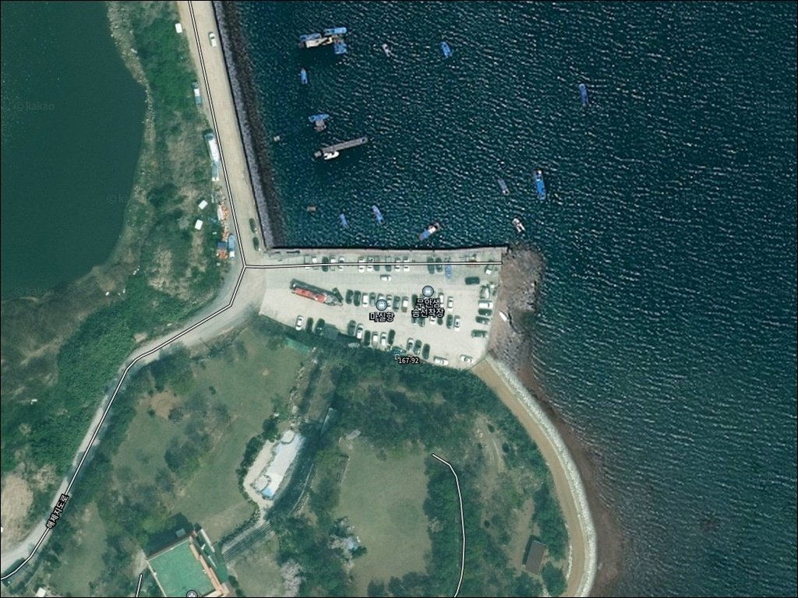
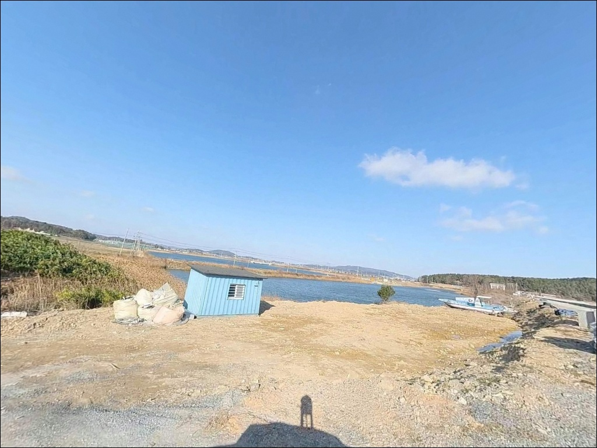
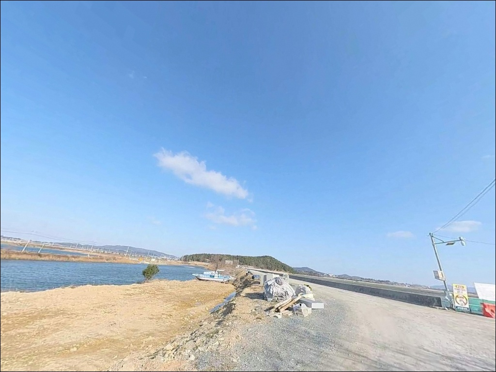
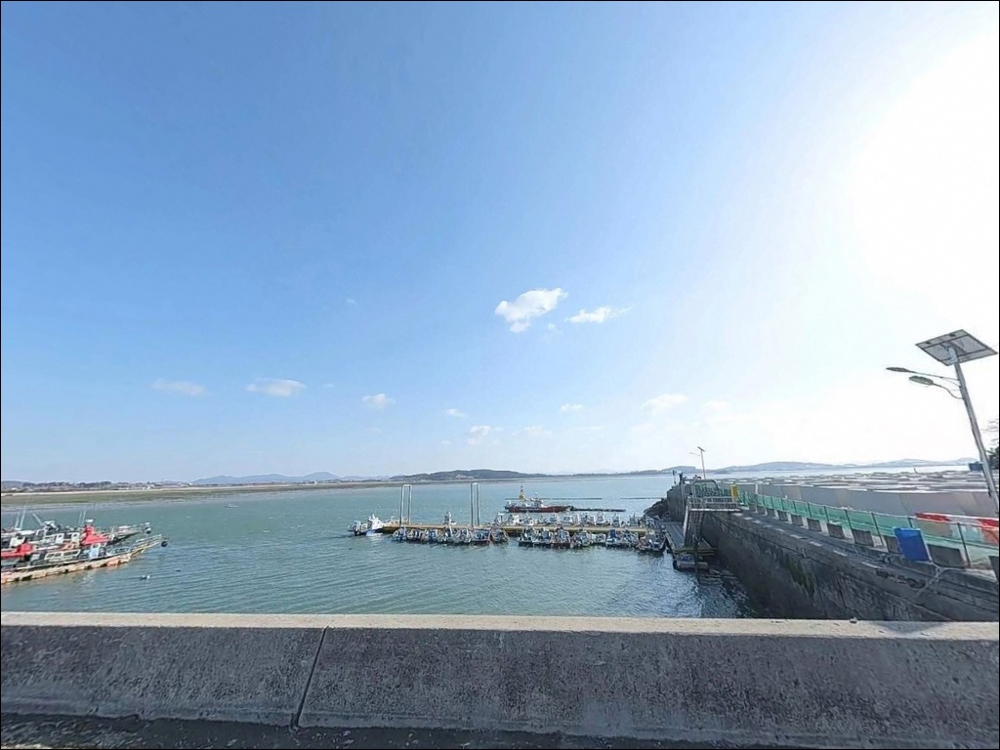
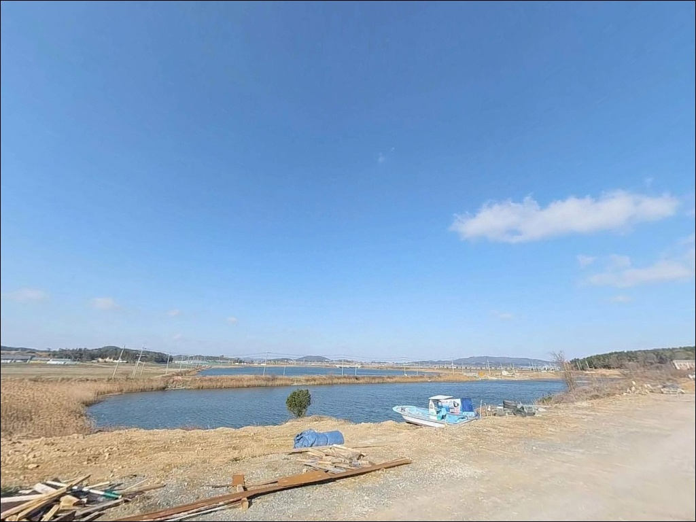
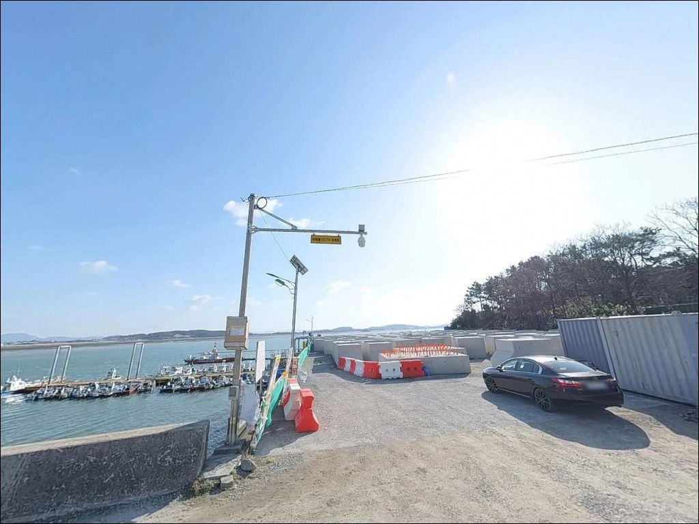
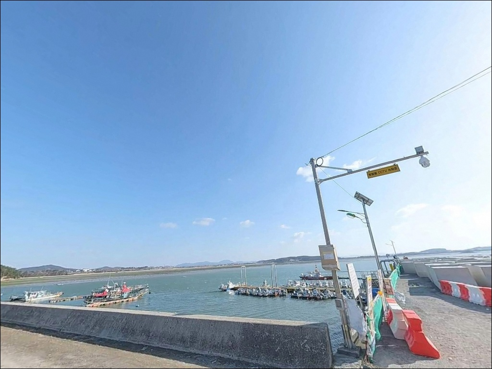
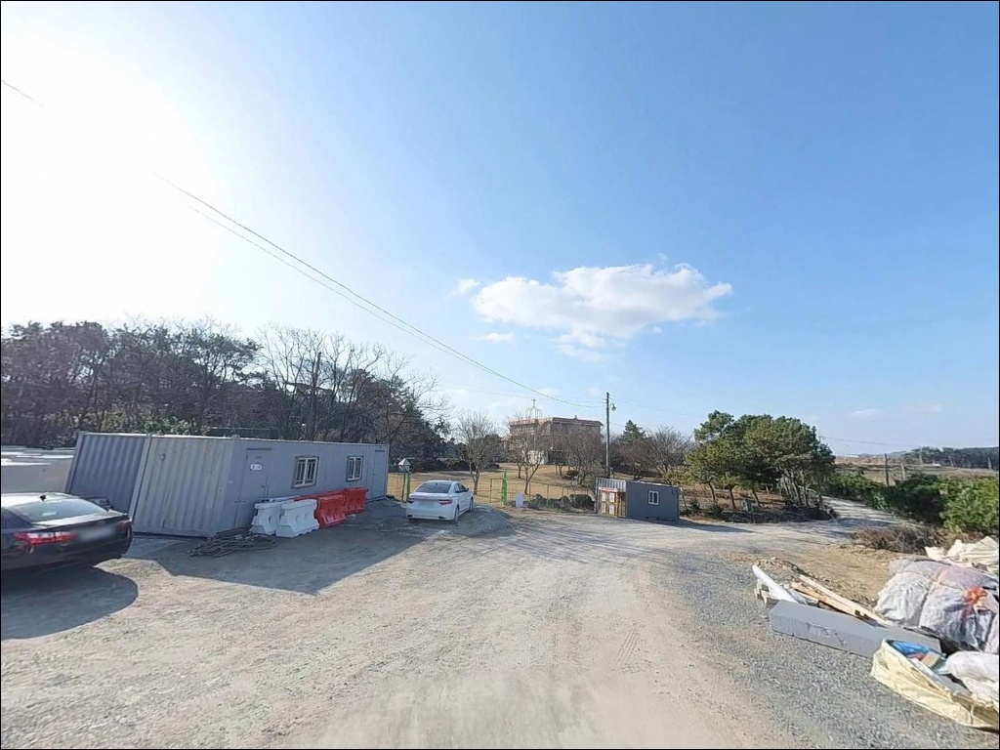
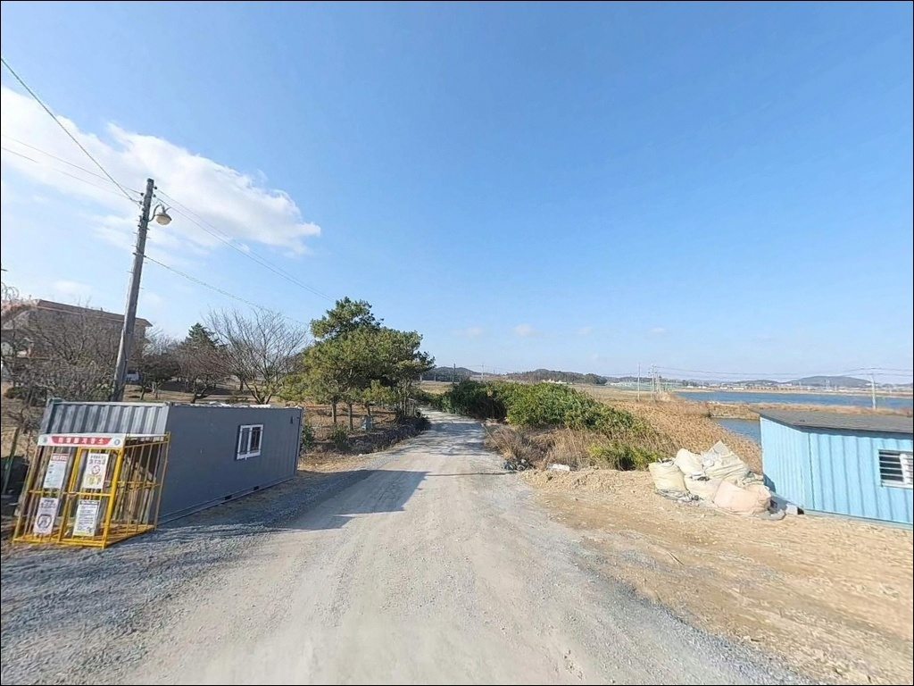

마실항, 무안샘솜선착장, 전남 무안군 고요함이 매력인 차박, 낚시 감성 장소
이 페이지에는 광고(제휴 링크 포함)가 있으며, 광고 링크를 통해 구매하면 운영자가 판매 수익 또는 수수료를 받을 수 있습니다. 포인트 사진: 카카오맵 스카이뷰·로드뷰. 이 페이지의 지도·사진 이미지는 카카오맵의 실제 서비스 이미지와 다를 수 있습니다.


포인트 안내
마실항
전남 무안군 해제면 천장리 927-1
무안 해제면 함해만 서해 갯벌권에서
물때를 확인하지 않고 진입하면,
간조 시 갯벌이 넓게 노출되어
방파제 앞 수면 자체가 채비를 던질 수 없는
환경이 됩니다.
만조 전후 몇 시간이 이 포인트에서
실질적으로 낚시를 즐길 수 있는 시간대입니다.
조류가 살아 있는 그 짧은 구간 안에
무엇을 어디서 어떻게 노릴 것인지를
미리 계획해 두어야
이 항구에서 시간을 허비하지 않습니다.
이 글은 마실항의 진입 환경,
차박 여건, 물때 기반 낚시 조건을 중심으로 정리합니다.
조황 단정이나 특정 어종 보장은
이 글의 범위에 포함되지 않습니다.

1. 진입 동선과 포인트 접근성
마실항은 24번 국도에서 해제면 천장리 방향으로
갈라지는 군도 수준 도로를 따라 진입합니다.
어촌 마을을 지나 항으로 내려가는 구조로,
도로 자체는 포장되어 있으나
일부 구간은 폭이 좁아지는 구간이 있습니다.
소형~중형 차량이라면 진입에 큰 어려움은 없는 편이지만,
대형 SUV나 캠핑 장비를 실은 차량이라면
출발 전에 위성지도로 진입로를
반드시 확인하고 가는 편이 안전합니다.
항 입구 공터와 선착장 주변에
차량을 세울 수 있는 공간이 있습니다.
선상낚시 출항지로 운영되는 항구 특성상
비교적 넓은 주차 공간이 확보되어 있으나,
어선 진출입로와 어업 차량 동선이
겹치지 않는 위치를 먼저 잡아야 합니다.
회차는 소형 차량 기준으로 가능하지만,
대형 차량은 항 내부 공간을
직접 확인한 뒤 판단하는 편이 좋습니다.

2. 차박 환경과 야간 체류 여건
마실항은 어촌 마을과 항이 가까이 붙어 있는 구조입니다.
민가 밀집도는 높지 않지만
완전히 외진 한적한 포인트는 아니며,
이른 아침 어선 출항 동선과
차박 위치가 겹칠 수 있습니다.
차박을 메인으로 삼기보다는
낚시 후 조용히 하룻밤 머무는 용도로
접근하는 편이 현실적입니다.
야간 조명은 항 시설 수준의 가로등이
일부 있을 가능성이 있으나,
전 구간이 밝지 않을 수 있어
헤드랜턴은 기본 준비물입니다.
함해만 만 구조상 강한 파도보다는
바람 방향과 세기가 야간 체류의 주요 변수가 됩니다.
기상 예보는 당일 아침에 한 번 더 확인하고
진입 여부를 최종 판단하는 것이 좋습니다.


3. 주변 편의시설 및 인프라 현황
마실항 반경 내에는 편의점이나 식당을
기대하기 어렵습니다.
해제면 소재지 방향으로 5~7km 이동하면
하나로마트와 편의점을 이용할 수 있으며,
주유소도 해제면 소재지 내에 있습니다.
식수, 얼음, 낚시 소품, 연료 모두
출발 전에 준비하고 진입하는 것이 기본입니다.
마실항은 해양수산부 어촌신활력증진사업
대상지로 선정되어
선착장 및 기반시설 개선이
순차적으로 진행 중입니다.
2026년 시행계획 변경 고시가 이루어진 만큼,
방문 시점에 따라 시설 환경이 달라질 수 있어
현장 도착 후 시설 상태를 직접 확인하는 것이 좋습니다.

4. 진입 전 반드시 챙겨야 할 준비사항
마실항 방문 전에 가장 먼저 확인할 것은
물때입니다.
무안 일대는 국내에서 조수간만의 차가
가장 큰 지역 중 하나로,
간조 시에는 수심이 극도로 얕아져
방파제 앞 수면이 낚시 불가 수준까지 줄어듭니다.
바다타임에서 해제면 기준 물때를 확인하고,
만조 전후 2~3시간 타이밍에 맞춰
출발 시각을 계산하는 것이 기본 전략입니다.
서해 갯벌형 포인트 특성상
간조 시 갯벌 구간 진입은 금물입니다.
발이 빠지거나 고립되는 사고가 발생할 수 있어,
해안 가장자리 접근은 만조 시간대에만 시도해야 합니다.
야간 방파제 낚시 시
발판 미끄럼에 주의하고
구명조끼 착용은 기본 매너입니다.
이른 아침 어선 운항 시간대에는
채비 관리와 주차 위치 모두 세심하게 신경 써야 합니다.

5. 물때에 따라 달라지는 낚시 여건 분석
마실항은 함해만 안쪽에 자리한
서해 갯벌형 내만 구조 포인트입니다.
방파제가 외항 방향으로 뻗어 있는 형태로
내항 쪽은 비교적 잔잔한 수면을 유지합니다.
항 전체 수심은 완만하게 떨어지는 편이며,
방파제 끝단과 수로 입구 부근에서
수심이 상대적으로 깊어지는 구간이 있습니다.
마실항은 서해 갯벌형 내만 구조로
만조 전후 시간대가 낚시 가능 여부를 결정합니다.
물때에 맞춰 진입하지 않으면
간조 시 갯벌이 노출되어
채비 투척 지점 자체가 사라집니다.
갯벌과 모래가 혼합된 바닥 지형은
붕장어, 숭어, 망둥어 같은 저서성 어종이
드나들기 좋은 구조입니다.
감성돔 치어가 방류된 해역으로
어족자원이 관리되고 있는 곳이기도 합니다.
조류가 흐르는 만조 전후에는
방파제 외항 방향이 원투 자리로 유효합니다.
출조 전 마실항 또는 해제면 일대
최신 조황을 검색해 보시기 바랍니다.


6. 포인트에 어울리는 낚시 스타일
이 포인트에서 가장 먼저 고려할 낚시는
방파제 원투낚시입니다.
갯벌과 모래가 혼합된 바닥과
완만한 수심 구조는
멀리 채비를 던져 바닥층을 공략하는 방식에 잘 맞습니다.
방파제 외항 방향으로 채비를 보내면
만조 전후 조류 흐름 속에서
붕장어, 숭어, 감성돔 등을 기대해 볼 수 있는
구간을 탐색할 수 있습니다.
특히 야간 원투낚시에서는
붕장어가 주로 반응하는 편입니다.
찌낚시는 내항 쪽 잔잔한 수면에서 시도 가능합니다.
조류가 강하지 않은 내항 구간에서
숭어나 감성돔을 찌 채비로 탐색하는 방식이
이 포인트 내항 구조와 어울립니다.
조황을 따라 어종이 달라지는 편이므로
복수 채비를 준비해 두고
현장 반응에 맞춰 전환하는 것이 효율적입니다.
마실항은 선상낚시 출항지로도 운영되고 있습니다.
배를 이용해 함해만 외해 방향으로 나가면
감성돔, 민어, 농어 등 계절별 어종을
노릴 수 있는 구조입니다.
방파제 육지 낚시보다 선상 출조가
조과 기대치가 높은 포인트이므로,
선상낚시를 메인으로 계획하고
방파제 낚시를 보조로 운용하는 방식이
이 항구를 제대로 활용하는 전략입니다.

7. 대안 포인트와 플랜 B 동선
마실항 낚시 여건이 물때와 맞지 않거나
주차 공간이 여의치 않을 때
가장 먼저 이동할 포인트는
도리포항입니다.
같은 해제면 권역에 있으며
방파제 규모가 더 크고,
마실항보다 조황 정보가 더 자주 공유되는
알려진 낚시 포인트입니다.
농어, 숭어, 감성돔 등
다양한 어종 조과가 나오는 곳으로
접근성도 무난합니다.
구로리 선착장 방파제는
같은 함해만 권역의 대안 포인트입니다.
봄철 4~5월 산란 감성돔 원투낚시로
현지인들이 찾는 곳으로,
물때를 맞춰야 하고 수심이 얕아
만조 위주로 낚시가 이루어지는 특성이
마실항과 비슷한 패턴입니다.
차박을 중심으로 계획하고 있다면
무안 톱머리 해수욕장을 고려할 수 있습니다.
마실항보다 낚시 차박 여건이 검증된 곳으로,
도다리, 감성돔 원투낚시와 붕장어, 쥐노래미 등을
노릴 수 있으며
솔밭 아래 그늘 자리가 차박 포인트로
낚시인들에게 알려진 공간입니다.

물때 하나 맞추면
마실항이 달라 보입니다
감성돔 치어 방류 해역이면서
선상낚시 출항 거점으로 운영되는 마실항은,
물때를 제대로 맞추면
서해 내만형 포인트 특유의
고요하고 집중력 있는 낚시를 즐길 수 있는 곳입니다.
방파제 원투낚시를 주력으로 하면서
여건이 맞을 때 선상 출조를 병행하는 방식이
이 항구의 특성을 가장 잘 활용하는 전략입니다.
편의시설 없는 조용한 어촌 마을에서
만조 시간대에 방파제 앞에 자리를 펴는
낚시 여행을 계획하는 분이라면,
물때와 기상 두 가지만 단단히 챙기고 내려가면
기억에 남는 출조가 될 수 있는 곳입니다.
서해 갯벌이 만들어내는 조류 흐름 안에서
차 한 대와 낚싯대 하나로 조용히 머무는 하룻밤은
이 포인트가 줄 수 있는 가장 솔직한 매력입니다.